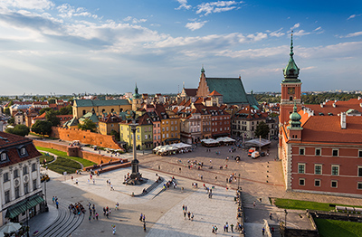

Podróże po stolicach Europy

- Na stronie znajdziesz informacje wszystkich stolicach europejskich.
- Poznasz najważniejsze zabytki lub ważne obiekty tych miast.
- Zobaczysz ważniejsze zabytki i obiekty na fotografiach.
- Poznasz ciekawostki historyczne danego miasta.